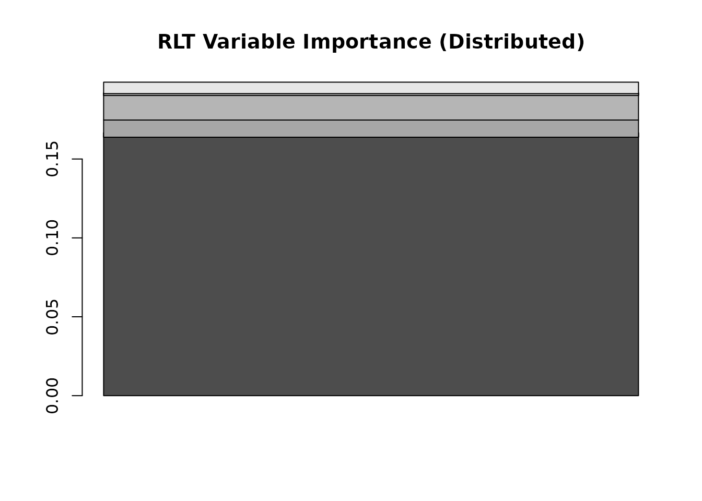

Reinforcement Learning Splitting Rule - Tutorial (RLT)
Ruoqing Zhu
Last Updated: May 17, 2026
Source:vignettes/articles/reinforcement-splitting.Rmd
reinforcement-splitting.RmdOverview
This page shows how to configure and use the reinforcement learning (RL) splitting rule in RLT.
Data
We generate continuous and categorical predictors with a binary outcome.
# (Optional) For reproducibility in this tutorial only.
set.seed(1)
# Keep the example compact (~100 obs)
trainn <- 80
testn <- 20
n <- trainn + testn
p <- 10
# Continuous + categorical predictors (last half as factors)
X1 <- matrix(rnorm(n * (p/2)), n, p/2)
X2 <- matrix(as.integer(runif(n * (p/2)) * 10), n, p/2) # integers 0-9
X <- data.frame(X1, X2)
X[, (p/2 + 1):p] <- lapply(X[, (p/2 + 1):p], as.factor)
# Binary outcome via a simple logistic signal
logit <- function(x) exp(x) / (1 + exp(x))
prob <- logit(-0.5 + 2 * X[, 1] + 0.5 * (X[, p] %in% c(1, 3, 5, 7)))
y <- factor(rbinom(n, 1, prob = prob), levels = c(0, 1))
# Split
trainX <- X[1:trainn, ]; trainY <- y[1:trainn]
testX <- X[(trainn + 1):(trainn + testn), ]; testY <- y[(trainn + 1):(trainn + testn)]Fit with RL splitting
Settings mirror your original Rmd: random linear-combination candidates with RL enabled. We also request distributed variable importance.
# install.packages("devtools"); devtools::install_github("teazrq/RLT")
library(RLT)
# Minimal but sensible defaults (keep consistent with original style)
ntrees <- 500
ncores <- 1
nmin <- 10
mtry <- p/2
RLTfit <- RLT(
trainX, trainY,
ntrees = ntrees, ncores = ncores, nmin = nmin, mtry = mtry,
split.gen = "random", nsplit = 2, # linear-combination candidates
resample.prob = 0.8, resample.replace = FALSE, # sampling settings
reinforcement = TRUE, # <-- RL is ON
importance = "distribute",
param.control = list(
"embed.ntrees" = 50, # embedded model size
"embed.mtry" = 2/3, # embedded mtry
"embed.nmin" = 5, # embedded min node size
"alpha" = 0.1 # regularization parameter as in your examples
),
verbose = FALSE
)Predict and evaluate
RLTPred <- predict(RLTfit, testX, ncores = ncores)
# Classification error / accuracy (original style using $Prediction)
train_error <- mean(RLTfit$Prediction != trainY)
test_error <- mean(RLTPred$Prediction != testY)
list(
Train_Error = round(train_error, 4),
Test_Error = round(test_error, 4)
)
## $Train_Error
## [1] 0.225
##
## $Test_Error
## [1] 0.25Variable importance
# Distributed assignment importance
barplot(RLTfit$VarImp, main = "RLT Variable Importance (Distributed)")
Inspect one tree
# Look at the first tree structure
get.one.tree(RLTfit, 1)
## Tree #1 [Classification]
##
## Node Depth Split Value n ClassProbs
## ------------------------------------------------------------------------------
## 1 0 X1 -0.4782 64 {0.56, 0.44}
## 2 1 X5.1(F) 2.0000 17 {0.88, 0.12}
## 3 1 X1 0.5939 47 {0.45, 0.55}
## 4 2 X2.1(F) 1312.0000 16 {0.94, 0.06}
## 5 2 * - 1 {0.00, 1.00}
## 6 3 * - 9 {0.89, 0.11}
## 7 3 * - 7 {1.00, 0.00}
## 8 2 X5 0.2335 31 {0.61, 0.39}
## 9 2 X5 -0.3909 16 {0.12, 0.88}
## 10 3 X1.1(F) 378.0000 12 {0.75, 0.25}
## 11 3 X5 0.9617 19 {0.53, 0.47}
## 12 4 * - 3 {0.33, 0.67}
## 13 4 * - 9 {0.89, 0.11}
## 14 4 * - 10 {0.80, 0.20}
## 15 4 * - 9 {0.22, 0.78}
## 16 3 * - 8 {0.25, 0.75}
## 17 3 * - 8 {0.00, 1.00}